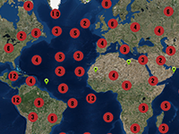

Grouping of markers

Example of grouping markers.
Usage instructions:
Add this script to map GameObject, specify groupTexture and font, and start the scene.
Markers will be created with random coordinates, grouped and displayed on the map.
Add this script to map GameObject, specify groupTexture and font, and start the scene.
Markers will be created with random coordinates, grouped and displayed on the map.
GroupMarkersExample.cs
/* INFINITY CODE 2013-2019 */
/* http://www.infinity-code.com */
using System.Collections.Generic;
using System.Linq;
using UnityEngine;
namespace InfinityCode.OnlineMapsExamples
{
/// <summary>
/// Example of grouping markers.
/// </summary>
[AddComponentMenu("Infinity Code/Online Maps/Examples (API Usage)/GroupMarkersExample")]
public class GroupMarkersExample : MonoBehaviour
{
/// <summary>
/// Base texture for grouping marker.
/// On top of this texture will be drawn numbers.
/// </summary>
public Texture2D groupTexture;
/// <summary>
/// The number of markers that will be created in the scene.
/// </summary>
public int countMarkers = 100;
/// <summary>
/// The minimum distance between the markers.
/// </summary>
public float distance = 30f / OnlineMapsUtils.tileSize; // pixels / 256
/// <summary>
/// Texture with numbers (2 rows: 1-5, 6-0).
/// </summary>
public Texture2D font;
private List<OnlineMapsMarker> markers;
private void Start()
{
markers = new List<OnlineMapsMarker>();
// Create a random markers.
for (int i = 0; i < countMarkers; i++)
{
OnlineMapsMarker marker = OnlineMapsMarkerManager.CreateItem(new Vector2(Random.Range(-180f, 180f), Random.Range(-90, 90)));
marker.label = "Marker " + i;
markers.Add(marker);
}
// Group markers.
GroupMarkers();
}
private void GroupMarkers()
{
List<MarkerGroup> groups = new List<MarkerGroup>();
for (int zoom = OnlineMaps.MAXZOOM; zoom >= 3; zoom--)
{
List<OnlineMapsMarker> ms = markers.Select(m => m).ToList();
for (int j = 0; j < ms.Count - 1; j++)
{
OnlineMapsMarker marker = ms[j];
MarkerGroup group = null;
double px, py;
marker.GetPosition(out px, out py);
OnlineMaps.instance.projection.CoordinatesToTile(px, py, zoom, out px, out py);
int k = j + 1;
while (k < ms.Count)
{
OnlineMapsMarker marker2 = ms[k];
double p2x, p2y;
marker2.GetPosition(out p2x, out p2y);
OnlineMaps.instance.projection.CoordinatesToTile(p2x, p2y, zoom, out p2x, out p2y);
if (OnlineMapsUtils.Magnitude(px, py, p2x, p2y) < distance)
{
if (group == null)
{
group = new MarkerGroup(zoom, groupTexture);
groups.Add(group);
group.Add(marker);
if (marker.range.min == 3) marker.range.min = zoom + 1;
}
group.Add(marker2);
if (marker2.range.min == 3) marker2.range.min = zoom + 1;
ms.RemoveAt(k);
px = group.tilePositionX;
py = group.tilePositionY;
}
else k++;
}
}
}
foreach (MarkerGroup g in groups) g.Apply(font);
}
private class MarkerGroup
{
public List<OnlineMapsMarker> markers;
public OnlineMapsMarker instance;
public Vector2 center;
public double tilePositionX, tilePositionY;
public int zoom;
public MarkerGroup(int zoom, Texture2D texture)
{
markers = new List<OnlineMapsMarker>();
this.zoom = zoom;
instance = OnlineMapsMarkerManager.CreateItem(Vector2.zero, texture);
instance.align = OnlineMapsAlign.Center;
instance.range = new OnlineMapsRange(zoom, zoom);
}
public void Add(OnlineMapsMarker marker)
{
markers.Add(marker);
center = markers.Aggregate(Vector2.zero, (current, m) => current + m.position) / markers.Count;
instance.position = center;
OnlineMaps.instance.projection.CoordinatesToTile(center.x, center.y, zoom, out tilePositionX, out tilePositionY);
instance.label = "Group. Count: " + markers.Count;
}
public void Apply(Texture2D font)
{
int width = instance.texture.width;
int height = instance.texture.height;
Texture2D texture = new Texture2D(width, height, TextureFormat.ARGB32, false);
Color[] colors = instance.texture.GetPixels();
char[] cText = markers.Count.ToString().ToCharArray();
Color[] fontColors = font.GetPixels();
int cw = font.width / 5;
int ch = font.height / 2;
int sx = (int) (width / 2f - cText.Length / 2f * cw);
int sy = (int) (height / 2f - ch / 2f);
for (int i = 0; i < cText.Length; i++)
{
int co = cText[i] - '0' - 1;
if (co < 0) co += 10;
int fx = co % 5 * cw;
int fy = (1 - co / 5) * ch;
for (int x = 0; x < cw; x++)
{
for (int y = 0; y < ch; y++)
{
int fi = (fy + y) * font.width + fx + x;
int ci = (sy + y) * width + sx + x + i * cw;
Color fc = fontColors[fi];
colors[ci] = Color.Lerp(colors[ci], new Color(fc.r, fc.g, fc.b, 1), fc.a);
}
}
}
texture.SetPixels(colors);
texture.Apply();
instance.texture = texture;
}
}
}
}